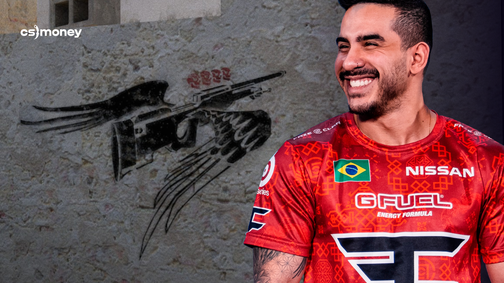

The man, The Myth, The Beast
On Mirage, behind the van on B, there’s an image of an AWP with wings and four marks above the scope. This drawing also appeared for a reason. Inspired by Marcelo “Coldzera” David.
In the semi-finals of MLG Major Championship: Columbus 2016, his team, Luminosity Gaming, played against Team Liquid. It was 9:15, and the Brazilian team needed a miracle. And then came Coldzera. With an AWP Asiimov in hand, he almost single-handedly stopped five attacking opponents in an attempt to rush B.
Four kills, including a no-scope on both s1mple and EliGE—two big names in CS:GO—felt magical! This epic historical CS:GO moment worth graffiti can’t be underestimated: Luminosity Gaming pushed the map into overtime rounds and won!